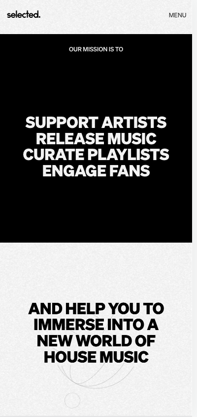
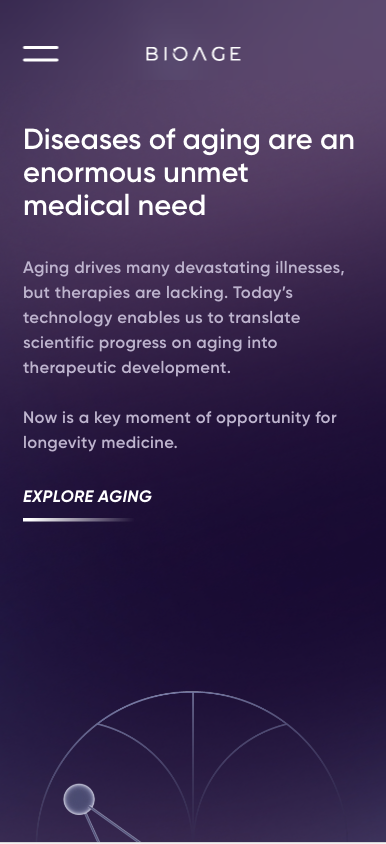
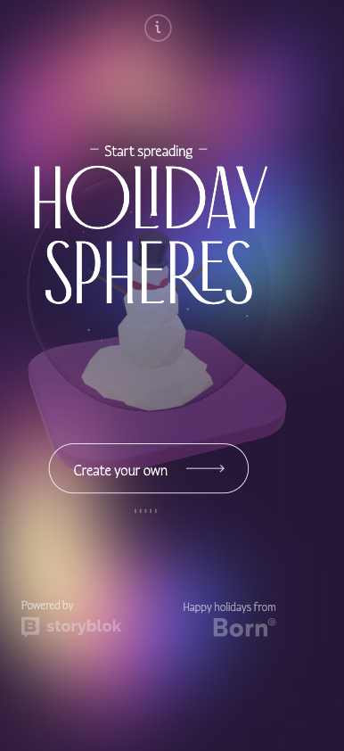

Contrast
Company: Selected.
 Visit WebsiteThis website does a great job using the contrast design principle with the black and white elements like typography and background colors. It helps capture your attention and notice when content is being grouped together or when a different section has begun.
Allignment
Company: Bio Age Labs
 Visit WebsiteLeft allignment is always the best option with typography because that is how our brains are programmed to look for information in our society. We always read from left to right, so I think the use of that allignment helps the reader understad where to find the next line of information instead of having to scan the whole page to find what you are looking for.
Visual Hierarchy
Company: Holiday Spheres
 Visit WebsiteVisual hierarchy can be achieved with scale. This website did a great job using big, medium, and small elements to help the user find the information they need. Contrast on the typography also helps draw your eyes to the main title.